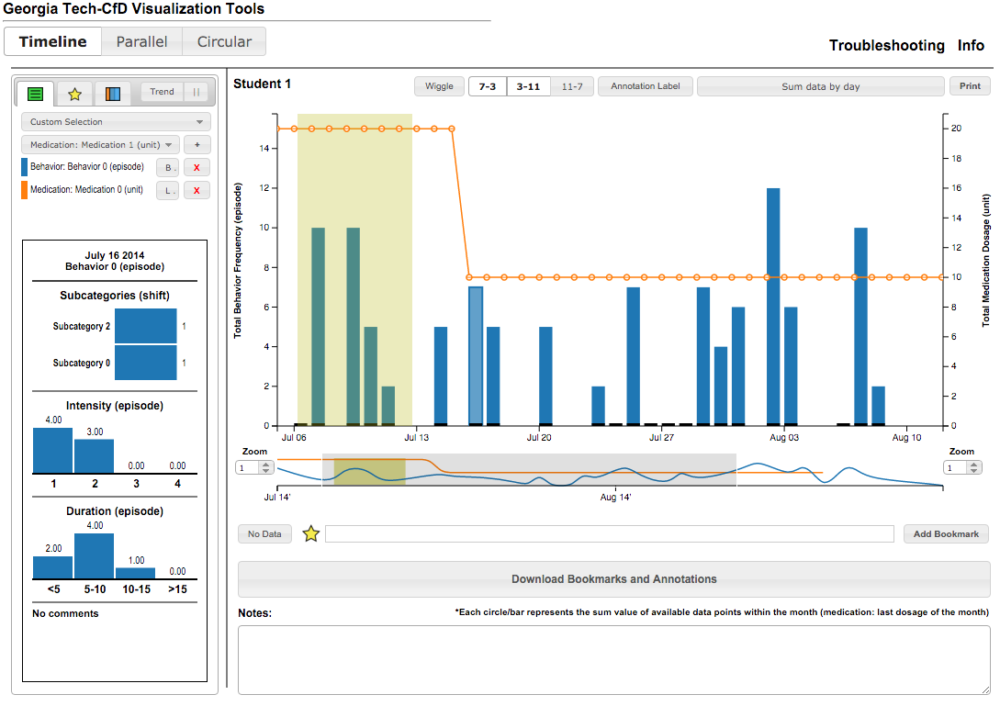

|

*Data are made up in this figure.
|
| Summary: |
The CfD Visualization is an interactive visualization application that supports the day-to-day data analysis needs in the Center for Discovery (CfD).
The CfD is a school that provides care to people, most of whom are children, with significant medical complexities and developmental issues.
Everyday, its staff collect a large amount of heterogenous behavioral and medical data from their students.
These data are then integrated and visualized with the CfD visualization to help the CfD staff make informed, data-driven decisions.
The application has been deployed and integrated into the center's work practice for 2-3 years and currently provides 3 visualization views.
During the deployment, the CfD changed its work practice on collecting and analyzing data because of the availability of the visualizations.
Currently, the application is regularly used by 20-30 behavioral specialists/analysts at the center.
|
|
|
|